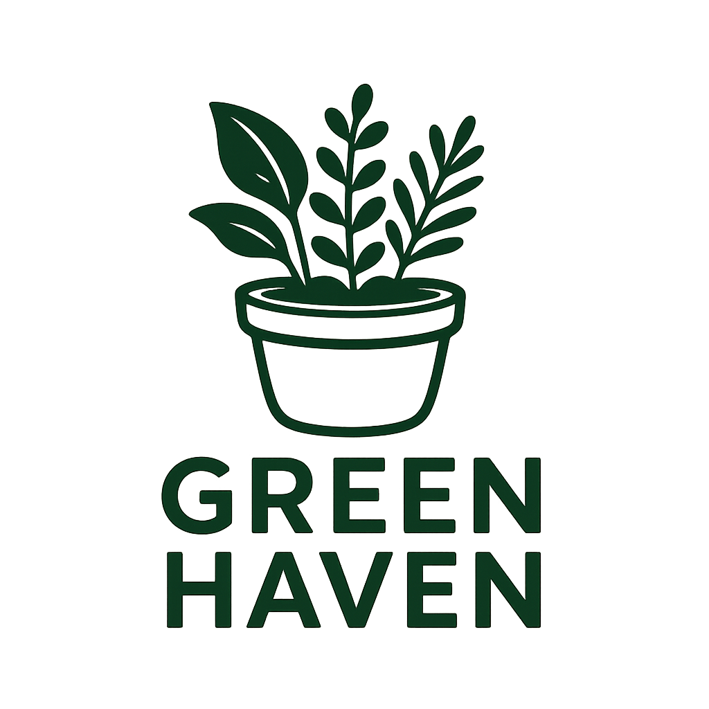

Green Haven is your go-to spot for a wide variety of plants, from fresh fruits and vegetables to beautiful indoor and outdoor plants. Whether you're looking to add some greenery to your home or start a new garden, we’ve got you covered.
Pick out individual flowers from a wide variety and create your own custom
bouquet, or browse our selection of pre-made arrangements.
Perfect for any occasion, or just to brighten up your space!
Can’t make it in? No problem! We’ll keep the green coming to you, delivering fresh plants and floral arrangements right to your door.